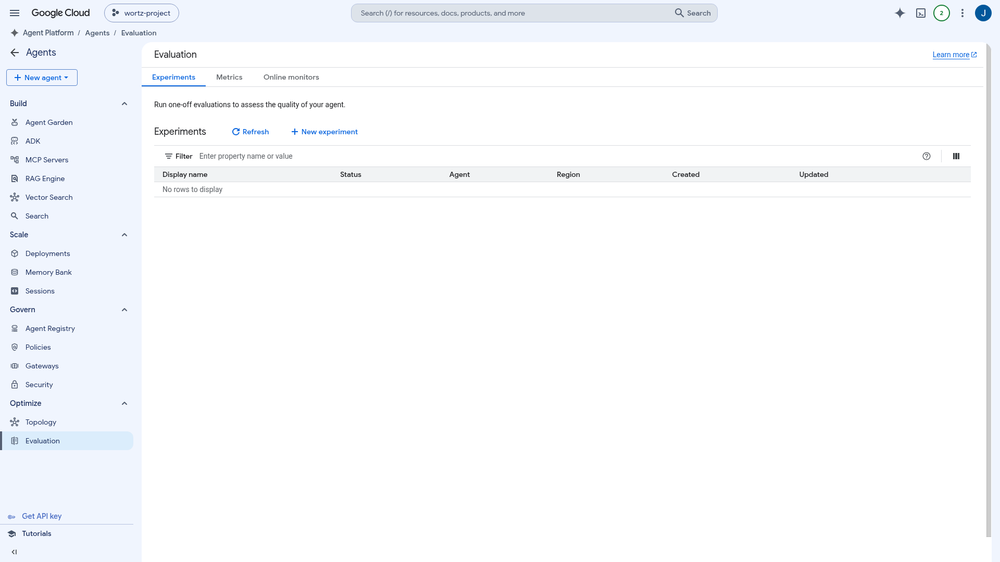
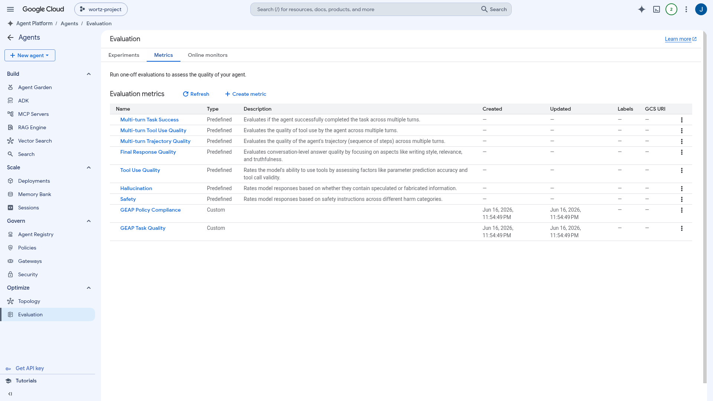
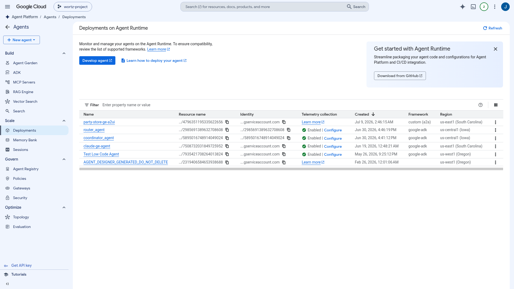
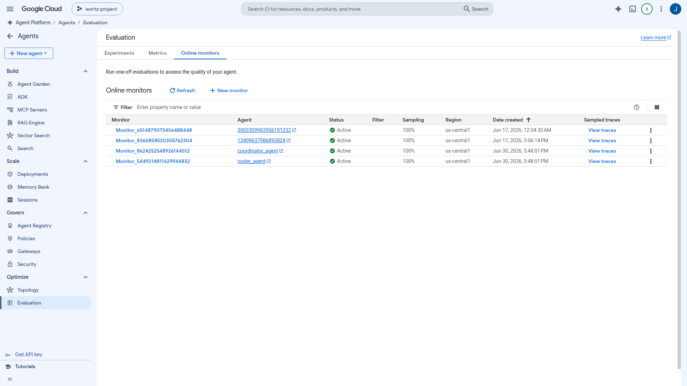
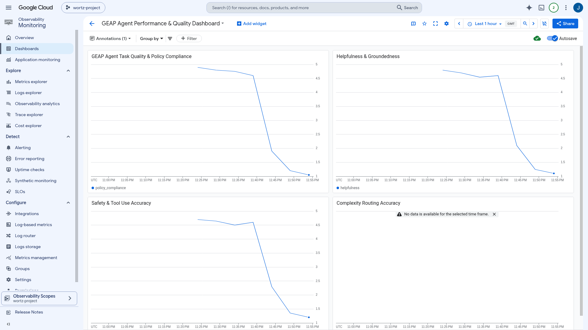
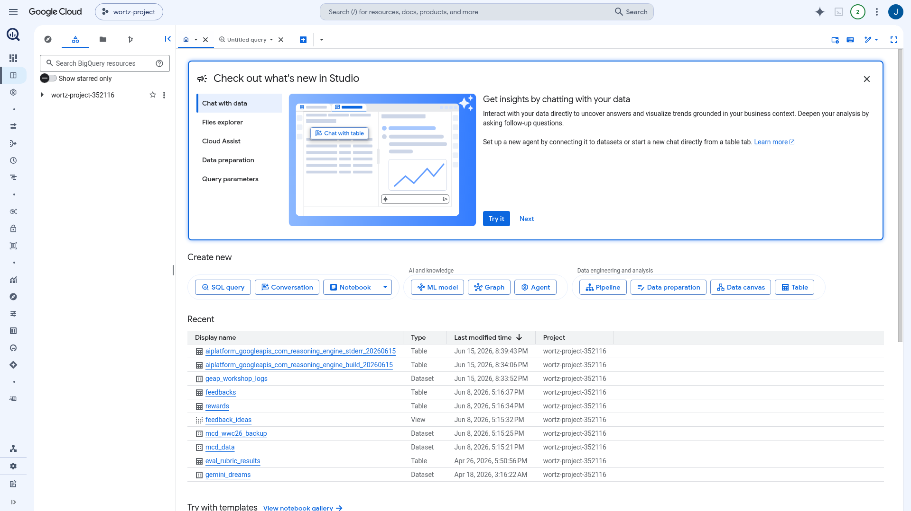

The Quality Flywheel. Measure, monitor, and keep improving agent quality end to end. A hands-on walkthrough that covers everything in the Optimize / Evaluation docs, run against real deployed agents.
Turn "it seems to work" into something you can measure. Evaluation is a loop across four phases, and the platform gives you a place to do each one.

Define a metric once and reuse it across offline runs and online monitors. There are three kinds, plus the split between reference-based and reference-free.
types.LLMMetric), like GEAP Policy Compliance.types.CodeExecutionMetric): a deterministic def evaluate(instance) -> float.
A trace is the record of one run: the model inputs, the responses, and the tool calls. Produce them whichever way fits the stage.
environment_context. Inject mocked tools or 503s to test resilience.
Online Monitors score live traffic as it comes in and send the scores to Cloud Monitoring, so you catch quality drift before users do.
agent_eval/*, online_evaluator/scores), so you can chart it, compare it, and share it.gcloud / monitoring_v3.

Don't just learn that the agent failed. Learn why, then fix it.
agents-cli eval.
uv run python -m src.eval.demo.full_eval_demo --agent-id $AGENT_ENGINE_ID · notebook: src/eval/demo/evaluation_demo.ipynbBuilt clean: current Google clients from PyPI, no monkey-patching, and 161 passing tests.